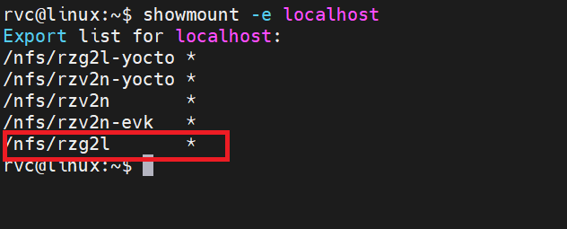
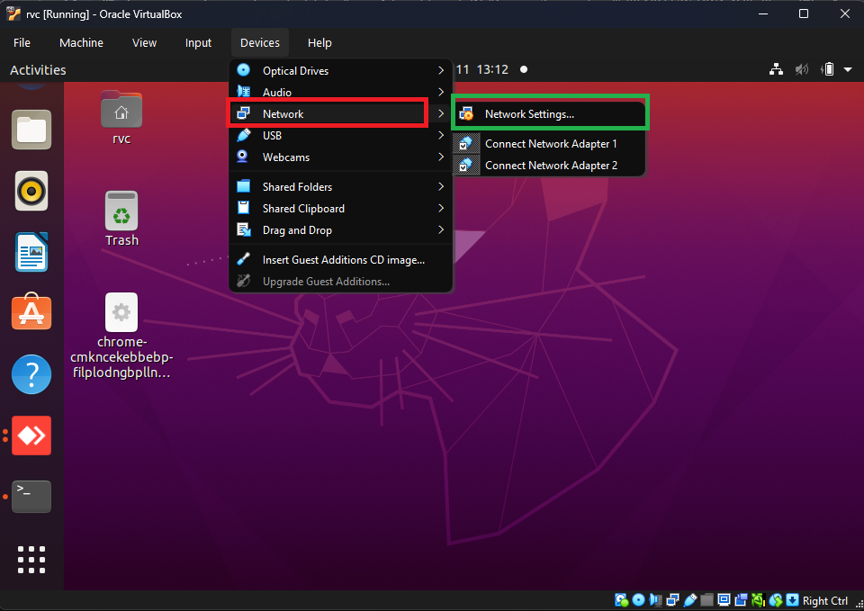
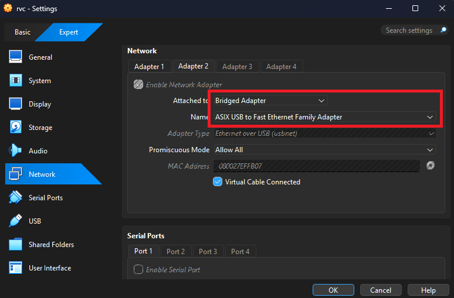
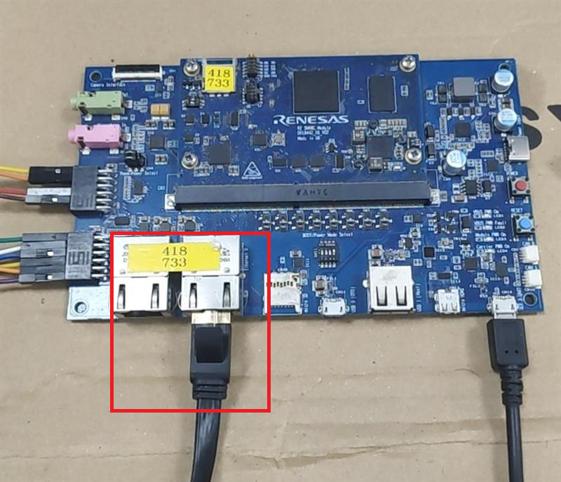

Booting with TFTP and NFS
During development, the fastest loop is to keep everything on the host: U-Boot loads the kernel Image and the device tree over TFTP, and the kernel mounts its root filesystem over NFS. A rebuilt kernel or a changed file in the rootfs is picked up on the next boot without touching the board's storage.
Host (Ubuntu) Board
/srv/tftp/Image, <board>.dtb --TFTP--> U-Boot (RAM)
/nfs/<board>/ (rootfs) --NFS---> Linux root=/dev/nfs
The host setup is the same for every board. Only the device tree name (and, if they differ, the load addresses) change in the U-Boot config.
Set up the TFTP server
Install tftp-hpa (/srv/tftp/ is used as the TFTP directory):
Check the status of tftpd-hpa:
Disable the firewall:
Set up the NFS server
Install the NFS server:
Start the NFS server:
Check the status of the NFS service:
Create one directory per board, for example /nfs/rzg2l:
Open /etc/exports:
Add one line per board directory:
Make the NFS server read /etc/exports again:
Confirm the export is active:

Prepare Image, DTB and rootfs
Copy Image and the device tree of your board to /srv/tftp/:
| Board | Device tree |
|---|---|
| RZ/G2L | r9a07g044l2-smarc.dtb |
| RZ/G3S | r9a08g045s33-smarc.dtb |
| RZ/V2N | r9a09g056n48-rzv2n-evk.dtb |
Extract the rootfs (*.tar.bz2) into the board directory:
Set a static IP on the host
If the host is a virtual machine, attach a network adapter in bridged mode to the Ethernet port connected to the board.
Select Devices → Network → Network Settings:

Configure the adapter as below:

Find the interface connected to the board with ifconfig (or ip addr):
rvc@linux:~$ ifconfig
enp0s3: flags=4163<UP,BROADCAST,RUNNING,MULTICAST> mtu 1500
inet 10.0.2.15 netmask 255.255.255.0 broadcast 10.0.2.255
...
enx080027effb07: flags=4163<UP,BROADCAST,RUNNING,MULTICAST> mtu 1500
inet 192.168.1.3 netmask 255.255.255.0 broadcast 192.168.1.255
ether 08:00:27:ef:fb:07 txqueuelen 1000 (Ethernet)
...
In this example the board is on enx080027effb07. To make the static IP permanent, add to /etc/network/interfaces:
auto lo
iface lo inet loopback
iface enx080027effb07 inet static
address 192.168.1.3 # <IP>
netmask 255.255.255.0 # <netmask>
Then reboot. To set it only for the current session:
The rest of this page uses 192.168.1.3 for the host and 192.168.1.5 for the board.
Connect the host and the board
Connect the serial console and an Ethernet port of the board to the host.

No picture yet.
No picture yet.
U-Boot config on the board
Power on the board and press any key to stop autoboot.
Set a MAC address (only needed if U-Boot reports address not set):
Set the board IP and the server IP:
Set bootcmd to load the kernel and the device tree over TFTP, and bootargs to mount the rootfs over NFS:
setenv bootcmd 'tftp 0x48080000 Image; tftp 0x48000000 r9a07g044l2-smarc.dtb; booti 0x48080000 - 0x48000000'
setenv bootargs 'console=ttySC0,115200n8 ip=192.168.1.5:192.168.1.3::::eth0 rootwait root=/dev/nfs rw nfsroot=192.168.1.3:/nfs/rzg2l,nfsvers=3,tcp noinitrd nohlt panic=1 earlyprintk=ttySC0,115200n8'
setenv bootcmd 'tftp 0x48080000 Image; tftp 0x48000000 r9a08g045s33-smarc.dtb; booti 0x48080000 - 0x48000000'
setenv bootargs 'console=ttySC0,115200n8 ip=192.168.1.5:192.168.1.3::::eth0 rootwait root=/dev/nfs rw nfsroot=192.168.1.3:/nfs/rzg3s,nfsvers=3,tcp'
The load addresses match the default boot of the RZ/G3S Start-up Guide. The bootargs have not been tested on this board yet.
What the parameters mean:
tftp <addr> <file>: load a file fromserveripinto RAM.booti <kernel> - <fdt>: boot an arm64Image. The-means there is no initramfs.ip=<board>:<server>::::eth0: configure the network in the kernel before mounting the rootfs.root=/dev/nfs nfsroot=<server>:<dir>: mount the rootfs over NFS.
Tip
On a new board, printenv shows the default bootcmd and bootargs. Reuse its load addresses and console= value, and change only the TFTP and NFS parts.
Save the environment if you want the board to always boot this way (optional):
Check the connection:
Boot:
Expected log (RZ/G2L):
Hit any key to stop autoboot: 0
Using ethernet@11c20000 device
TFTP from server 192.168.1.3; our IP address is 192.168.1.5
Filename 'Image'.
Load address: 0x48080000
Loading: #################################################################
...
done
Bytes transferred = 25963008 (18c2a00 hex)
Using ethernet@11c20000 device
TFTP from server 192.168.1.3; our IP address is 192.168.1.5
Filename 'r9a07g044l2-smarc.dtb'.
Load address: 0x48000000
Loading: ###
done
Bytes transferred = 39425 (9a01 hex)
Moving Image from 0x48080000 to 0x48200000, end=49b80000
## Flattened Device Tree blob at 48000000
Booting using the fdt blob at 0x48000000
Loading Device Tree to 0000000057ff3000, end 0000000057fffa00 ... OK
Starting kernel ...